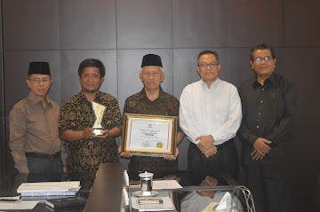
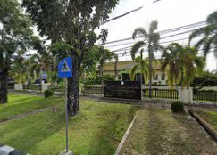
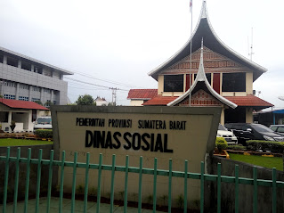
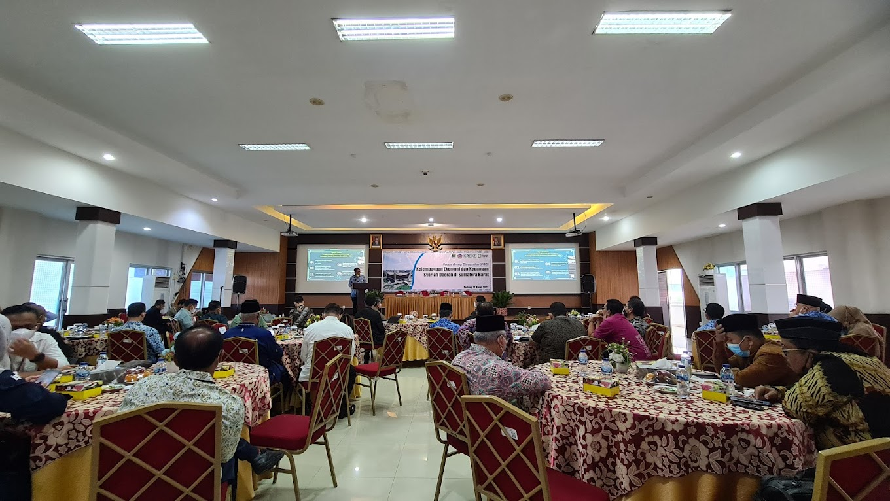
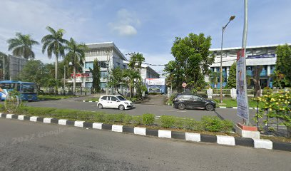

<!DOCTYPE html>
<html>
<head>
    <title>Peta Padang</title>
    <link rel="stylesheet" type="text/css" href="leaflet.css"/>
    <script type="text/javascript" src="leaflet.js"></script>
</head>
<body>
    <div id="mapku" style="width: 100%; height: 600px"></div>
</body>
<script type="text/javascript">
    
    var myMap = L.map('mapku').setView([-0.9241036505205499, 100.36239299448495],16);

    var title = L.tileLayer('https://tile.openstreetmap.org/{z}/{x}/{y}.png',{
        maxZoom: 19,
        id: 'mapbox/streets-v11',
        tileSize: 512,
        zoomOffset: -1
    }).addTo(myMap);

   //  var LeafIcon = L.Icon.extend({
     //  options: {
       //    iconSize: [110,110]
     //  }
  // })

   // var markericon = new LeafIcon({iconUrl: 'images/markerr.png'});

    

    var myLocation = [
        [-0.9238022782367574, 100.36260042233536,'Majid Raya Sumbar'],
        [-0.9238676468176674, 100.36209258708335, 'BAZNAS Provinsi Sumatera Barat'],
        [-0.9239944140007653, 100.36115369192468, 'Labor Diseminasi BPTP Sumatera Barat'],
        [-0.9246043591862791, 100.36068324923494, 'Dinas Sosial Pemprov Sumatera Barat'],
        [-0.9251781210817422, 100.36086418872964, 'Kanwil DJPBN Padang'],
        [-0.9253642060122313, 100.36126225561603, 'Unit Penelitian, Pengabdian Kepada Masyarakat, dan Penjaminan Mutu'],
        [-0.9258758762215485, 100.36317065683106, 'Kupi Batigo Padang']
    ];

    for (var i = 0; i<myLocation.length; i++){
       markerMaps = new L.marker([myLocation[i][0], myLocation[i][1]]).addTo(myMap).bindTooltip(myLocation[i][2]).bindPopup(myLocation[i][3]);
    }
    
    var Jlnmasjidraya = [
        [-0.923624920343913, 100.36136046176401], 
        [-0.9244381461711282, 100.36132947770184],
        [-0.9251719481433832, 100.36131932883289],
        [-0.926030342586267, 100.36131932883289],
        [-0.9258348666423064, 100.36227133604453], 
        [-0.9256138938231017, 100.36371634699076]
    ];

    L.polyline(Jlnmasjidraya).addTo(myMap);


    var circle = L.circle([-0.9241382266843733, 100.36245842693138],{
        color: 'Indian Red',
        fillColor: '#CD5C5C',
        fillOpacity: 0.5,
        radius: 300
    }).addTo(myMap).bindTooltip('Padang');

   

    var info_masjid_raya_sumbar = '<p style="text-align: center;"> <p>Masjid Raya Sumatra Barat adalah masjid raya di provinsi Sumatra Barat yang terletak di Jalan Chatib Sulaiman, Kecamatan Padang Utara, Kota Padang yang memiliki luas sekitar 4.430 meter persegi</p>';
    L.marker([-0.9238022782367574, 100.36260042233536]).bindTooltip("Masjid Raya Sumbar").bindPopup(info_masjid_raya_sumbar).addTo(myMap);

    var info_BAZNAS_Provinsi_Sumatera_Barat = '<p style="text-align: center;"> <p>Lembaga Pemerintah Non Stuktural (Resmi) untuk penghimpunan dan penyaluran Zakat di Wilayah Provinsi Se-Sumatera Barat</p>';
    L.marker([-0.9238676468176674, 100.36209258708335]).bindTooltip("BAZNAZ Provinsi Sumbar").bindPopup(info_BAZNAS_Provinsi_Sumatera_Barat).addTo(myMap);

    var info_Labor_Diseminasi_BPTP_Sumatera_Barat= '<p style="text-align: center;"> <p>Laboratorium Diseminasi Padang merupakan unit fungsional dari BPTP-Balitbangtan Sumatera Barat yang melakukan pengkajian dan pengembangan diseminasi, serta perakitan materi diseminasi teknologi pertanian yang siap disebarluaskan kepada penyuluh, petani, dan pengguna lainnya.</p>';
    L.marker([-0.9239944140007653, 100.36115369192468]).bindTooltip("Labor Diseminasi BPTP Sumbar").bindPopup(info_Labor_Diseminasi_BPTP_Sumatera_Barat).addTo(myMap);

    var info_Dinas_Sosial_Pemprov_Sumatera_Barat= '<p style="text-align: center;"> <p> Dinas Sosial Provinsi Sumatera Barat (Dinsos Sumbar) bergerak cepat dalam upaya penanggulangan bencana banjir yang melanda kawasan Batu Busuak, Kota Padang. </p>';
    L.marker([-0.9246043591862791, 100.36068324923494]).bindTooltip("Dinas Sosial Pemprov Sumbar").bindPopup(info_Dinas_Sosial_Pemprov_Sumatera_Barat).addTo(myMap);

    var info_Kanwil_DJPBN_Padang= '<p style="text-align: center;"> <p>Eksistensi Kanwil Ditjen Perbendaharaan Provinsi Sumatera Barat melalui metamorfosis panjang yang diawali dengan terbentuknya institusi bernama Pejabatan Keuangan pada tahun 1945.</p>';
    L.marker([-0.9251781210817422, 100.36086418872964]).bindTooltip("Kanwil DJPBN Padang").bindPopup(info_Kanwil_DJPBN_Padang).addTo(myMap);

    var info_Unit_Penelitian_Pengabdian_Kepada_Masyarakat_dan_Penjaminan_Mutu= '<p style="text-align: center;"> <p>Lembaga Penelitian, Pengabdian Kepada Masyarakat, dan Penjaminan Mutu</p>';
    L.marker([-0.9253642060122313, 100.36126225561603]).bindTooltip("Unit Penelitian, Pengabdian Kepada Masyarakat, dan Penjaminan Mutu").bindPopup(info_Unit_Penelitian_Pengabdian_Kepada_Masyarakat_dan_Penjaminan_Mutu).addTo(myMap);

    var info_Kupi_Batigo_Padang= '<p style="text-align: center;"> <p>Kafe Kopi dan Aneka Makanan Resto </p>';
    L.marker([-0.9258758762215485, 100.36317065683106]).bindTooltip("Kupi Batigo Padang").bindPopup(info_Kupi_Batigo_Padang).addTo(myMap);

    myMap.on('click',onMapClick);

   

</script>
</html>